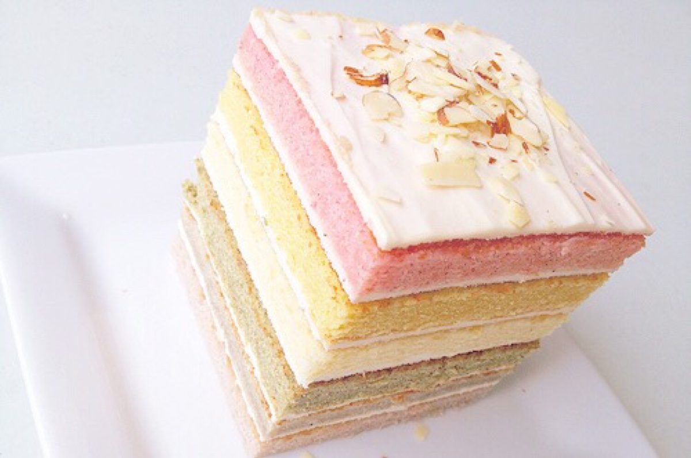

海绵蛋糕是利用蛋白起泡性能使蛋液中充入大量的空气，加入面粉烘烤而成的一类膨松点心，因为其结构类似于多孔的海绵而得名，在国外称为泡沫蛋糕。在国内称为清蛋糕。
在蛋糕制作过程中，蛋白通过高速搅拌使其中的球蛋白降低了表面张力，增加了蛋白的黏度，因黏度大的成分有助于泡沫初期的形成，使之快速地打入空气，形成泡沫。蛋白中的球蛋白和其他蛋白，受搅拌的机械作用，产生了轻度变性。变性的蛋白质分子可以凝结成一层皮，形成十分牢固的薄膜将混入的空气包围起来，同时，由于表面张力的作用，使得蛋白泡沫收缩变成球形，加上蛋白胶体具有黏度和加入的面粉原料附着在蛋白泡沫周围，使泡沫变得很稳定，能保持住混入的气体，加热的过程中，泡沫内的气体又受热膨胀，使制品疏松多孔并具有一定的弹性和韧性。
海绵蛋糕在制作过程中，一般有两种做法：一种是只用蛋清而不用蛋黄的“天使蛋糕”，另一种是用全蛋的“黄海绵蛋糕”，因而配方也各有不同。